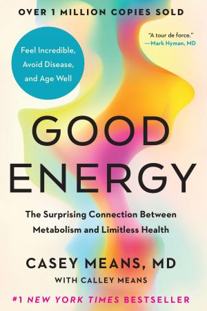

1.3 — Cibo e Fashion
1.3.1 — Dal microbioma al piatto
→ Apri come pagina indipendente — bibliografia + nav dedicata
Il microbioma — lo strato di microbi che riveste l'intestino — è sempre più connesso con umore, glicemia e malattie. I microbi controllano la velocità con cui molecole come gli zuccheri entrano in circolo, e le fibre favoriscono un microbioma sano e vario[1], con minori infiammazioni. Come altri cibi non processati, i legumi sono ricchi di fibre; e i microbi regolano persino la pressione cardiaca[2] (🦠 ff.92.2 Un organo in più: il microbioma).
Non siamo quello che defechiamo: il 75% della cacca è composto da microbi del nostro microbioma. Più mangiamo fibre, più alimentiamo il microbioma, più andiamo in bagno, più “stiamo un fiore”. Per leggere quello che esce c’è perfino una scala clinica a sette forme, la scala di Bristol[68]: i tipi 1 e 2 sono difficili da espellere e indicano stitichezza, il 3 e il 4 sono le feci ideali, il 6 e il 7 sono diarrea. Avrebbe sorriso De André: “Dai diamanti non nasce niente / Dal letame nascono i fior.” E le fibre non fanno bene solo all’intestino: per ogni 7 grammi di fibre si ha una riduzione di malattie cardiache del 9%. Sette grammi sono due mele, un avocado, oppure 20 grammi di mandorle (💩 ff.99.4 Il microbioma nella cacca).
Le fibre e l’amido resistente arrivano nel colon senza essere digeriti, e lì i batteri li fermentano. Una rassegna di tre ricercatori della Fondazione Oswaldo Cruz di Rio de Janeiro, uscita su Frontiers in Endocrinology nel gennaio 2020, segue quello che ne esce fino al cervello[60]. I prodotti principali sono tre acidi grassi a catena corta, acetato, propionato e butirrato, in proporzioni di circa 60, 20 e 20, e ogni giorno l’intestino ne produce fra 500 e 600 millimoli, a seconda delle fibre nella dieta, dei batteri presenti e del tempo di transito. Anche le proteine fermentano, ma in fondo all’intestino, quando i carboidrati sono finiti, e lasciano ammoniaca, fenoli e solfuri. Gli acidi li assorbono le cellule del colon; quelli che non vi vengono consumati passano nella vena porta e fanno da combustibile al fegato, tranne l’acetato. È la stessa strada fra intestino e fegato su cui un’avena porosa potrebbe catturare le molecole di plastica (🥣 ff.153.4 Porridge contro la plastica). Al resto del corpo ne arriva solo una piccola frazione.
Quella frazione, però, raggiunge la testa. Nel liquido cerebrospinale umano si trovano tutti e tre gli acidi. Nei topi cresciuti senza microbi la barriera fra sangue e cervello è più permeabile, dalla vita nell’utero all’età adulta, e ricolonizzarli con ceppi che producono questi acidi la ripara. Negli stessi topi la microglia, le cellule che fanno da difesa immunitaria del cervello, resta immatura; una miscela dei tre acidi data per bocca basta a farla maturare. Nei roditori il butirrato stimola il BDNF, un fattore di crescita dei neuroni, e la nascita di nuove cellule nervose. Quando gli antibiotici svuotano il microbiota, i deficit di memoria che ne seguono si recuperano del tutto con i probiotici o con l’esercizio, lo stesso movimento il cui acido lattico spinge il BDNF (🍼 ff.120.4 Lattato al cervello?). Sugli esseri umani i dati sono pochi e indiretti: nei pazienti con depressione gli acidi grassi a catena corta nelle feci sono più bassi che nei controlli.
Anche quel dato va preso con cautela. Quasi tutti gli studi sull’uomo misurano gli acidi nelle feci come indicatore di quanto se ne produce nel colon, con molte fonti di errore: il transito, la permeabilità dell’intestino, il modo in cui il campione viene maneggiato. Un WC intelligente legge già nella pipì il pH, spia del rapporto fra proteine e fibre (🧻 ff.47.4 WC smart); per questi acidi la misura resta indiretta. Nei bambini con autismo gli studi hanno trovato livelli fecali sia più bassi sia più alti dei coetanei. E resta da stabilire la direzione della causa fra microbiota e malattie del cervello. La maggior parte delle prove viene dai roditori, e gli autori chiedono prudenza nel trasferirle all’uomo. Sul metabolismo le prove sono di altro tipo: studi epidemiologici e sperimentali indicano che mangiare più fibre riduce il rischio di malattie metaboliche, forse perché aumenta la produzione di questi acidi.
Il dialogo fra intestino e cervello va nei due sensi. Nel tronco encefalico, racconta Nature, sono state identificate cellule che percepiscono i segnali immunitari della periferia del corpo[69] e fanno da regolatori della risposta infiammatoria. Lo stress, dal canto suo, arriva fino ai batteri: nei topi tenuti a lungo immobilizzati[70] la ricchezza e la varietà microbica dell’intestino calano, crescono i batteri anaerobi facoltativi e il patogeno Citrobacter rodentium attecchisce di più. E il microbioma è entrato in oncologia: una rassegna del British Journal of Cancer scritta per gli oncologi[71] ricorda che i batteri intestinali pesano sullo sviluppo di alcuni tumori e sulla risposta alle cure, soprattutto agli inibitori dei checkpoint immunitari, e che dieta, probiotici e trapianto di microbiota fecale sono strumenti ancora in sviluppo.
Le Blue Zones — Sardegna, Okinawa, Ikaria, Nicoya, Loma Linda — confermano questa biologia con i numeri della longevità. In Sardegna, la famiglia Melis è entrata nel Guinness dei Primati con una media di 93 anni tra 9 fratelli. Dan Buettner, giornalista del National Geographic ed esperto di zone blu, identifica pattern ricorrenti: legumi quotidiani, piccole porzioni, pasti condivisi, niente fretta (🫘 ff.92.1 Fagioli di bazar). Ma se le zone blu offrono il modello empirico della longevità, cosa succede quando chiediamo a un'intelligenza artificiale di progettare la dieta perfetta partendo dai numeri? Michele ha chiesto a GPT la dieta perfetta per arrivare a cento anni, con un vincolo preciso: 100 grammi di proteine, 40 grammi di fibre, micronutrienti essenziali, il tutto in circa 2.200 kcal. Senza spingersi fino alle cento pillole al giorno di Bryan Johnson, la risposta va oltre i soli fagioli (👌 ff.92.4 La dieta perfetta (secondo GPT)).
Invece di integratori da 100 euro a barattolo, la scienza propone piante, frutti, legumi. Che sia sport, finanza o dieta, nella vita non bisogna inventarsi nulla di complicato. Bastano cose semplici, consistenza, pazienza e, soprattutto, non fare stupidate. La verdura più nutrizionale ed economica? Le patate viola di Okinawa, che con il loro viola acceso sono piene di antociani — potenti antiossidanti che troviamo anche in mirtilli, ciliegie e cavolo rosso. Una guida rapida sugli antiossidanti nel cibo completa l’elenco dei cibi ricchi di antociani (🥔 ff.99.3 Patate viola: il superfood per eccellenza?).
E c’è chi va oltre la tradizione delle zone blu e trasforma il proprio corpo in laboratorio. Dave Asprey, autore di Smarter not Harder, ha fatto del biohacking una filosofia: l’idea che spesso sottoponiamo l’organismo a stress estremi — allenamenti massacranti, digiuni prolungati — senza fornirgli i micronutrienti necessari per consolidare i benefici. Uno dei motivi è la carenza di minerali: il 45% degli americani non raggiunge il fabbisogno giornaliero di magnesio. Asprey differenzia supplementi e integratori a seconda che si voglia ottimizzare performance sportiva, longevità o massa muscolare, e ne riporta i dosaggi; la British Dietetic Association ha definito pseudo-scientifica la dieta che propone (💊 ff.104.1 L’hacker del corpo). Il biohacking vive anche di dati. Il mercato dei wearable — smartwatch, cuffie wireless, bracciali smart — ha generato una categoria a sé, quella dei dispositivi “altri”, che sfugge alle classificazioni tradizionali. L’Oura Ring, un anello, misura l’HRV — la variabilità della frequenza cardiaca — e suggerisce agli atleti se il corpo è pronto per allenarsi o se ha bisogno di recupero. Supersapiens offre un misuratore del glicogeno nel sangue: permette di non “finire mai la benzina” durante uno sforzo prolungato e, soprattutto, di valutare come il corpo reagisce a cibi diversi. Zoe va oltre: spedisce un kit completo per misurazioni fisiologiche e — dettaglio che svela quanto la scienza sia diventata intima — un collettore di feci da rispedire per corriere, così da correlare il microbioma intestinale con le risposte glicemiche individuali. La variabilità tra una persona e l’altra è grandissima, e passa anche per i microbi dell’intestino (🕛 ff.35.2 Smartwatch e non solo).
Il biohacker che misura di più è Bryan Johnson. Nel 2016, raccontava New Scientist, aveva lanciato Kernel, una società che investiva 100 milioni di dollari in un impianto cerebrale per potenziare l’intelligenza[72], a partire da esperimenti sulla memoria con Theodore Berger della University of Southern California. Oggi misura anche le erezioni notturne, che considera un biomarcatore importante quanto pressione, colesterolo e glicemia: ha annunciato un nuovo record di 3 ore e 36 minuti[73], più della durata di Titanic. È lo stesso uomo delle cento pillole al giorno (💊 ff.49.4 Il superuomo che prende 100 pillole al giorno).
Il biohacking, però, ha un nemico più insidioso degli integratori mancanti: il marketing travestito da scienza. I produttori alimentari spendono fra marketing e formulazioni appetibili dieci volte più della ricerca medica, e il risultato è un paesaggio di etichette progettate per ingannare. Un caso emblematico: un “latte proteico” di soia che sbandiera “10g di proteine” a caratteri cubitali sulla confezione. Leggendo l’etichetta e facendo i rapporti corretti, emerge che per ottenere la stessa quantità di proteine quel prodotto richiede il doppio delle calorie rispetto a un latte vaccino standard. Il trucco è nel denominatore: i grammi di proteine impressionano, ma le calorie necessarie per raggiungerli raccontano un’altra storia. Per fare questi conti futuro fortissimo ha poi costruito buonGPT, un chatbot che mette a confronto macronutrienti e calorie (🥛 ff.113.2 L’inganno del latte proteico).
Il biohacking arriva anche al cibo. Un gruppo di ricerca ha messo a punto il bioprinting caotico che crea noodles con microstrutture allineate per l’agricoltura cellulare[3]: una testina con un miscelatore statico stende insieme dal 30 al 40% di microalghe unicellulari, Chlamydomonas o Chlorella, e dal 60 al 70% di cellule muscolari, di topo o di pollo. Ne escono noodles ibridi, in parte pianta e in parte animale, di cui gli autori hanno misurato consistenza, nutrienti e comportamento in cottura.
L’intelligenza artificiale entra anche nei bidoni della spazzatura. A Tacoma, nello Stato di Washington, telecamere dotate di intelligenza artificiale montate sui camion della raccolta differenziata scansionano il contenuto dei cassonetti del riciclo, identificando oggetti che non dovrebbero essere lì. Ai residenti sorpresi in flagrante arriva a casa una cartolina.
I centenari delle Blue Zones mangiano semplice, ma il pianeta ha bisogno di più. Il riso è ecologico; il grano, che produce solo una volta all’anno e necessita continuamente di essere ripiantato, leggermente meno. Un’alternativa arriva dalla kernza (Thinopyrum intermedium): a differenza del grano, questo cereale è perenne e dà semi in modo ciclico, senza bisogno di arare e ripiantare ogni stagione. Patagonia — che a quanto pare fa anche birra — lo ha utilizzato per una Pale Ale alternativa. (🌾 ff.26.3 I super-cibi per salvare il pianeta).
La kernza risparmia la semina di ogni anno; nella Giava occidentale si recupera lo scarto. Quello che resta dopo aver spremuto le arachidi, fatto il tofu o lavorato palma e tapioca viene lasciato fermentare da ventiquattro a settantadue ore con funghi del genere Neurospora: ne esce l’oncom, un panetto semisolido che di solito si mangia fritto e che la cucina sundanese conosce da secoli. Una rassegna pubblicata su Discover Food nel luglio 2025 ricostruisce la storia di Neurospora crassa nei cibi fermentati di Asia e Africa[56]: l’oncom indonesiano, l’okara fermentata e il tofu HongJun in Cina, i prodotti a base di manioca dell’Africa subsahariana. Il profilo nutrizionale è insolito per un alimento di origine non animale: una proteina completa, con tutti e nove gli amminoacidi essenziali, poco grasso, fibra solubile che gli autori legano alla salute intestinale, ferro, zinco e vitamine del gruppo B. La fermentazione lavora proprio sul residuo: in uno degli studi citati la farina di soia passa dal 50 al 63% di proteine in novantasei ore. Il fungo è aerobio obbligato, non riesce a crescere né nell’intestino né nei tessuti. Chiedere a un chatbot cosa cucinare con quello che c’è in frigorifero è un gioco recente (👩🍳 ff.41.4 Parodi chi?); i sundanesi allo stesso problema hanno risposto con un microrganismo.
Adesso la stessa specie cambia scala. Negli Stati Uniti ha ottenuto lo status GRAS, «generalmente riconosciuta come sicura», e Singapore nel 2024 ne ha approvato la vendita come nuovo alimento; The Better Meat Co. e Meati Foods la coltivano da sola, in fermentatori a liquido sommerso, per ricavarne micoproteina da usare nelle carni alternative. È la strada che il Quorn percorre da decenni con un altro fungo filamentoso, Fusarium venenatum. Lo stesso genere, con il ceppo TR4 di Fusarium oxysporum, minaccia oggi la Cavendish, la banana che aveva preso il posto della Gros Michel dopo la malattia di Panama (🍌 ff.155.3 Estinzione di banane): un fungo toglie un frutto dagli scaffali, un suo parente ci mette una proteina. Un’etichetta nutrizionale stampata su una muffa suona strana quanto la lista degli ingredienti di una mela, piena di acidi, zuccheri e sigle (🏷️ ff.155.1 Etichetta naturale?), e porta lo stesso promemoria: anche il naturale è chimica, e i numeri da soli non dicono se un cibo faccia bene. Qui la cautela è doppia. Il lavoro è una rassegna storica e non una sperimentazione: sicurezza e valore nutrizionale gli autori dichiarano di non ripercorrerli, perché li considerano già stabiliti in letteratura. E entrambi gli autori lavorano per The Better Meat Co., che ha finanziato lo studio — l’azienda che quella muffa la vende.
E se il microbioma vive di fibre, la sua seconda benzina sono i polifenoli. Caffè e tè ne sono ricchi[4], e rappresentano un’arma contro picchi glicemici e diabete. La caffeina, però, prende in prestito energia dal futuro: si lega ai recettori dell’adenosina (la molecola della stanchezza), e quando se ne va tutta l’adenosina accumulata ci colpisce con forza maggiore. Andrew Huberman, nel suo podcast Using Caffeine to Optimize Mental & Physical Performance[5], suggerisce di non superare i 400 mg di caffeina al giorno (una guida completa sulla caffeina in Starbucks[6] rivela quanta ne assumiamo senza rendercene conto). Il contrappeso perfetto è il tè: può ridurre l’ansia[7] grazie alla L-teanina[8], un aminoacido che favorisce concentrazione senza agitazione (☕ ff.92.3 Tè o caffè? Benzina del microbioma).
Le classifiche dei polifenoli vanno lette con attenzione. Quella condivisa da Siim Land[74] mette in cima i chiodi di garofano, con 15.188 mg per 100 grammi, poi anice stellato (5.460), cacao in polvere (3.448) e noci (2.149), e indica un obiettivo di circa 2.000 mg al giorno; ma sono valori per 100 grammi, e le spezie si usano a pizzichi. Anche la misura ha la sua chimica: una rassegna del Journal of Agricultural and Food Chemistry divide i test sulla capacità antiossidante[75] fra quelli basati sul trasferimento di un atomo di idrogeno, come l’ORAC, e quelli basati sul trasferimento di elettroni, come il test dei fenoli totali con il reattivo di Folin-Ciocalteu, e chiede di affiancare test specifici e validati.
Le spezie hanno anche un’altra storia. Secondo la «gastronomia darwiniana»[76] potremmo esserci evoluti per amarle perché antimicrobiche, così da ridurre le intossicazioni alimentari, soprattutto nei climi caldi. E il cacao arriva in Europa prima per i suoi effetti che per il gusto: Oliver Sacks, nel suo Oaxaca Journal ripreso da The Marginalian[77], racconta la bevanda amara dei Maya, fredda e senza zucchero, e si dice che Montezuma ne bevesse quaranta o cinquanta tazze al giorno; oggi sappiamo che flavonoidi, polifenoli, teobromina e magnesio del cacao agiscono sul corpo in vari modi.
Il microbioma non abita solo l’intestino. Ospite di Peter Attia, la neurologa Kellyann Niotis ricorda che la salute di gengive e denti predice bene quella generale[78]: alcuni batteri gram-negativi sono associati ai depositi di amiloide e tau, e ci sono prove autoptiche che i batteri possano arrivare al cervello, o che l’infiammazione inneschi il danno; per chi è a rischio la cura della bocca è decisiva, compresa la pulizia di bite e paradenti. Dalla bocca si prova anche a intervenire: Lantern Bioworks, il cui sito oggi rimanda a Lumina, propone un probiotico progettato per la bocca[79], da stendere con lo spazzolino, che riequilibra il pH orale e frena i batteri che secernono acido.
Ma se il microbioma decide chi prospera nel nostro intestino, i grassi decidono cosa brucia nelle nostre arterie. Compound Interest classifica cinque categorie di grassi alimentari, e la gerarchia è spietata: i grassi trans aumentano le malattie cardiovascolari[9] senza offrire nulla in cambio, mentre i poli-insaturi, grazie ai doppi legami C=C, funzionano da anti-ossidanti e abbassano il colesterolo. Il Pokédex degli oli rivela sorprese: l’olio di semi di lino è campione di omega-3 corti, ma l’olio di cocco, nonostante il marketing tropicale, è una bomba di grassi saturi. La trappola è nella chimica di cottura: scaldare troppo l’olio extravergine lo trasforma in grasso trans[10] — basta “girare” il legame C=C della catena di carbonio per convertire un alleato in veleno silenzioso. E il rapporto tra omega-6 e omega-3 complica ulteriormente il quadro: troppi omega-6 rispetto agli omega-3 possono annullare i benefici dei grassi “buoni”. Come approfondisce il blog Dynomight sugli oli di semi[11], la risposta semplice non esiste (🍔 ff.94.2 Grassi buoni e cattivi).
E se dovete scegliere quali grassi assumere, la risposta più netta arriva dagli omega-3 “lunghi”. In un podcast che vale l’ascolto, Rhonda Patrick spiega che assumere 1 grammo al giorno di omega-3 — equivalente a circa 50 grammi di salmone — può avere gli stessi effetti benefici di smettere di fumare. Ma non tutti gli omega-3 sono uguali: i maggiori benefici derivano dagli omega-3 “lunghi” (EPA e DPA)[12], presenti in fonti animali come il pesce. La variante “breve” (ALA), presente in semi e nella dieta vegetariana, viene parzialmente allungata durante la digestione, ma non basta a raggiungere i livelli ottimali. Per vegetariani o pescetariani, la soluzione più semplice e consistente resta un integratore[13] — uno solo, contro le cento pillole al giorno di 💊 ff.49.4 Il superuomo che prende 100 pillole al giorno (🚬 ff.94.3 Omega-3 come sigarette?).
E il vino? Tra i trend analizzati da Vaclav Smil, il consumo di vino in Francia ha raggiunto un picco nel 1926, con 136 litri all’anno pro capite — due bicchieri pieni a testa, ogni giorno. Nel 2020, nonostante la pandemia, i francesi hanno bevuto più o meno un bicchiere ogni due giorni. Il crollo mostra l’aumento di alternative — superalcolici, bibite gasate, energy drink — e non dice molto sull’assunzione complessiva di alcol in termini assoluti. I nonni avevano lo stomaco forte (🍷 ff.32.2 Beviamoci su (o forse no)).
Poi è arrivato il COVID. Sessantacinque milioni di persone sono affette da long-COVID: un mix di fiato corto, deficit cognitivo, insonnia e cattiva qualità del sonno che persiste mesi dopo l’infezione. Il confine tra digitale e fisico si fa poroso: Long-Covid Europe ha sviluppato un’estensione di Minecraft con un personaggio debilitato dal COVID[14], per far comprendere anche attraverso il gioco la realtà vissuta dai malati. Il segno è anche economico: per la Commissione europea il long COVID riguardava l’1,7% della popolazione dell’Unione nel 2021 e il 2,9% nel 2022, e ha ridotto l’offerta di lavoro dello 0,3-0,5% nel 2022[80]. Nell’impossibilità di fuggire da ciò che è successo con Zoom e VR, il mondo fisico risponde col digitale. Ma la cicatrice più silenziosa riguarda chi non ha vissuto l’infezione: su Nature si documenta come il microbioma dei bambini nati durante il lockdown sia stato alterato[15]. Meno contatti sociali, meno esposizione microbica, ambienti eccessivamente sanificati: il risultato è una finestra temporale di sviluppo del microbioma impoverita, con conseguenze immunologiche ancora da misurare appieno (🫁 ff.76.3 E gli effetti fisici).
1.3.2 — Calorie, peso e metabolismo
→ Apri come pagina indipendente — bibliografia + nav dedicata
Ma quanto è cambiata, in concreto, la dieta che ci ha portato fin qui? I dati di Pew Research sulla dieta americana degli ultimi quarant’anni offrono una radiografia impietosa: gli americani assumono 300 kcal in più al giorno rispetto al 1970, il consumo di pollo è raddoppiato mentre le patate — anche fritte — sono diminuite. I prodotti a base di farine sono passati da 400 a 600 kcal. La regola “calories in – calories out” resta un buon punto di partenza, eppure la correlazione tra BMI e calorie consumate presenta una dispersione non trascurabile: a parità di introito, il corpo spende più o meno energia a seconda della grandezza del pasto, della quantità di fibre e dei macronutrienti. Uno studio su The Lancet Diabetes & Endocrinology ha mostrato che non ci sono differenze significative tra una dieta prevalentemente a base di grassi e una a base di carboidrati — a conferma i Maasai del Kenya, la cui dieta da 3.000 kcal è composta per il 66% da grassi, senza epidemia di obesità. Le fibre, invece, mostrano un effetto protettivo reale sul BMI. Il quadro si complica se aggiungiamo gli inquinanti ambientali: il testo di “A Chemical Hunger” ipotizza che contaminanti ubiquitari abbiano alterato i meccanismi di regolazione del peso, un’ipotesi discussa ma non liquidabile (🍔 ff.49.3 Diete e inquinanti). Il tasso di obesità italiano si attesta al 24,12% — quasi il doppio di quello francese (12,36%)[16], e le risposte glicemiche individuali confermano che la stessa caloria produce effetti radicalmente diversi in corpi diversi: il 35% delle persone ha un picco glicemico maggiore con il riso [17].
La dieta può cambiare un corpo in una generazione. In 34 anni l’uomo cinese medio è diventato 3 pollici più alto del nonno[89], circa sette centimetri e mezzo, e il DNA di una popolazione non si riscrive in 35 anni. Il cambiamento ha anche un rovescio: i tumori del colon e del retto crescono rapidamente fra chi ha meno di cinquant’anni, e uno studio su Nature Medicine ha cercato nell’epigenetica le tracce dell’esposoma, l’insieme delle esposizioni di ambiente e stile di vita. Accanto a istruzione, dieta e fumo, già noti, è emerso l’erbicida picloram[90], un’associazione replicata in nove coorti e confermata nei dati di 94 contee americane in 21 anni.

Ma fuori dalle zone blu, il quadro è ben diverso. Negli Stati Uniti, il 60% delle calorie consumate proviene da alimenti ultra-processati. Emulsionanti, dolcificanti artificiali e conservanti sterminano intere specie batteriche benefiche (🤮 ff.104.3 Gli abominevoli 5). I grassi trans aumentano il rischio cardiovascolare del 30%[9]. Il polisorbato 80 riduce l'integrità della barriera intestinale del 50%[19]. Lo sciroppo di mais ad alto fruttosio (HFCS) diminuisce la capacità di apprendimento e memoria del 20%[20]. Il Red Dye 40 — il colorante più usato negli USA — aumenta l'iperattività nei bambini del 10%[21]. L'obesità è la pandemia silenziosa del XXI secolo: la mortalità legata ad essa è cresciuta dal 5,3% (1990) all'8,5% (2019); in Italia, i casi sono passati da 10 a 23 persone su 100 dal 1975. Il tasso di obesità italiano (24,12%) è quasi il doppio di quello francese (12,36%) (⚽ ff.49.1 Siamo sempre più tondi). “Per migliorare non serve per forza fare cose stratosferiche — basta non fare cose sbagliate,” scriveva futuro fortissimo presentando i cinque ingredienti da evitare. Intanto la scienza cerca di invertire il danno: i geroprotettori, una classe di composti che migliorano la longevità[22], rappresentano la frontiera farmacologica più promettente.
Tra i composti più promettenti c’è una molecola dal nome imbarazzante e dall’efficacia sorprendente: la spermidina. Presente in concentrazioni significative in piselli, grano, soia e polenta, questa poliammina ha dimostrato di poter allungare la vita di quasi sei anni. La sua struttura chimica protegge il DNA dallo stress ossidativo, e la polenta ne è una delle fonti. Persino il tè si rivela protettivo del DNA, tanto da poter conservare lo sperma, dove la spermidina si trova e da cui prende il nome (🌶 ff.99.2 Polenta e spermidina).
Il danno dei cibi processati si inscrive in un quadro più largo: l’aspettativa di vita, complice anche il COVID, in molti paesi è in stasi, con gli Stati Uniti superati dalla Cina. La spesa sanitaria americana è esplosa negli ultimi cinquant’anni, eppure i risultati non seguono. C’è stata una diminuzione di morti per malattie cardiovascolari[23], e anche il progresso nella cura contro il cancro[24] è evidente. Ma dal 2012 il progresso annuale è diminuito, se non addirittura azzerato e invertito per le malattie cardiovascolari. L’aspettativa di vita media più alta è anche connessa con il crollo della mortalità infantile[25], il che rende il dato aggregato meno rassicurante di quanto appaia. Il futuro della medicina non sembra fortissimo: la curva si appiattisce proprio quando dovrebbe accelerare (❓ ff.66.2 Siamo sempre più malati?).
Il peso sulla bilancia dice poco della salute. Casey Means, in Good Energy, critica una medicina che cura invece di prevenire: l’acqua nel corpo varia ogni giorno da 1 a 4 litri, e per lei conta il metabolismo. Glicemia a digiuno ottimale: sotto 85 mg/dL. HOMA-IR sotto 2. HbA1c come indicatore a 3 mesi (⚖️ ff.113.1 Buttiamo la bilancia?). Conta anche quando si mangia. Satchin Panda suggerisce di limitare la finestra in cui si digerisce a 10, massimo 12 ore, perché anche una birra riattiva tutto il processo digestivo; in uno studio su Nature Metabolism i topi che assumono le stesse calorie in un arco di tempo più breve perdono più peso (🕐 ff.22.1 Dieta circadiana?).
Poi c’è il lavoro che il corpo fa per digerire. Uno studio pubblicato su Food & Nutrition Research[26] ha misurato l’effetto termico di due panini da 800 calorie ciascuno: uno integrale, ricco di fibre e cereali non raffinati, l’altro con pane bianco e formaggio processato. Per digerire il primo se ne consumano 137, per il secondo 73: il cibo non processato può chiedere fino al doppio dell’energia. Negli Stati Uniti l’obesità è legata a 300 kcal in più al giorno negli ultimi venticinque anni, e questo consumo in più, che il corpo fa da sé, potrebbe aiutare (🥔 ff.22.3 Perché mangiare cibo non processato (e ricco di fibre)).
Le risposte glicemiche sono profondamente individuali: il 35% delle persone ha un picco maggiore con il riso, il 24% con il pane e il 22% con l’uva[17] — la stessa caloria produce effetti diversi in corpi diversi. E a New York City i livelli di sodio nei piatti variano enormemente[27] da un ristorante all'altro.
Contano anche i rapporti tra nutrienti. Il rapporto ferro/rame è un esempio della complessità chimica dell’organismo e della dieta. Gli alimenti non processati valgono per i loro rapporti interni bilanciati; un integratore isolato può essere controproducente perché altera questi equilibri, come un chilo di curcuma in cento grammi di pollo al curry. I tre rapporti più utili da monitorare? Proteine su kilocalorie, perché un rapporto proteico più alto a parità di calorie aumenta la sazietà[28] e riduce il consumo complessivo. Zuccheri su proteine, perché l’ingestione di proteine insieme ai carboidrati abbassa il picco glicemico[29]. E fibre su cento kilocalorie, il rapporto preferito del microbioma (➗ ff.113.4 L’importanza dei rapporti).
Un altro aspetto per contenere la fame è l’indice di sazietà: non tutti i cibi, a parità di kilocalorie ingerite, riempiono allo stesso modo. Uno studio sull’indice di sazietà dei cibi comuni[30] ha confrontato porzioni da 240 kcal e trovato una correlazione positiva con acqua, fibre e proteine (in ordine decrescente) e con il peso servito, mentre grassi e apprezzamento al palato correlano negativamente. Il risultato è netto: le patate guidano la classifica con un indice di 332, contro i 47 del croissant — sette volte più sazianti. Il 76% degli alimenti testati batte il pane bianco, e tra la frutta arance e mele saziano più delle banane. Al MIT provano a ingannare la sazietà con una capsula che vibra nello stomaco[99]: come un bicchiere d’acqua prima di mangiare, stimola i meccanorecettori che avvisano il cervello attraverso il nervo vago, e negli animali, presa 20 minuti prima del pasto, ha ridotto il consumo di circa il 40%; i ricercatori la propongono come alternativa futura alla chirurgia e ai GLP-1 (🤰🏻 ff.22.4 I cibi che saziano di più).
E se le patate saziano sette volte più del croissant, l’alcol porta calorie senza saziare. Due conti domestici rendono la cosa concreta. Quattro bottiglie di vino al mese equivalgono, su base annua, a ventisettemila kilocalorie[31] — come quarantotto Big Mac, uno a settimana, tradotti in circa tre chili e mezzo di massa corporea in più. Cinque birre medie di lager la settimana, in un anno, valgono quarantaquattromila kilocalorie: duecentoventuno ciambelle, una ogni due giorni, cinque chili e sei etti. «A ’sto punto diventiamo respiriani?», si chiedeva Michele: quantificare ogni aspetto della quotidianità può essere alienante, ma serve essere quantitativamente consapevoli (🍹 ff.22.5 Beviamoci su?).
Il cibo è anche racconto e conto climatico. L’hamburger di Hemingway — carne macinata, cipolle, capperi, India relish, cottura netta fuori e cuore morbido — tiene insieme gusto, identità, rituale (🍔 ff.19.2 L'hamburger preferito di Hemingway). Il conto arriva dalle mucche: con il metano del loro stomaco ruminante emettono più CO2 equivalente degli Stati Uniti, quanto i trasporti di tutto il mondo, mentre i cibi vegetali inquinano in media dieci volte meno delle controparti animali (💦 ff.19.1 Flatulenze inquinanti). C’è poi la leva del packaging. Per la startup francese La Vie l’agenzia Everland ha usato il rosa del bacon accanto al verde, per smarcarsi dalle confezioni classiche del bio e del vegano e allargare la clientela (🐖 ff.19.4 Scelte sostenibili cool). E Redefine Meat stampa in 3D i suoi hamburger vegani per replicare le striature delle fibre muscolari, da cui dipendono cottura, consistenza e sapore (💉 ff.19.5 Carne stampata 3D). La stampa 3D biologica avanza oltre la carne: il bioprinting caotico crea noodles con microstrutture allineate per l'agricoltura cellulare[3].
Anche la cucina di casa entra nel conto. Secondo uno studio di Stanford i fornelli a gas rilasciano metano anche da spenti, circa l’1% di quello che bruciano: un effetto piccolo, pari allo 0,2% dell’inquinamento delle auto statunitensi (♨️ ff.19.3 Fornelli assassini). Conta anche che cosa offrono le città: Un'analisi di 5 milioni di piatti da 30.000 menu di ristoranti a Boston, Londra e Dubai[32] rivela quanto i menu urbani riflettano (o tradiscano) la salute di una città. E persino la cottura nasconde scienza: un articolo di Nature spiega come cuocere le uova in modo uniforme alternando la temperatura dell’acqua tra 30°C e 100°C[33].
I farmaci GLP-1 — Ozempic, Mounjaro, Wegovy — stanno ridisegnando il panorama farmaceutico e la relazione tra medicina e alimentazione. Il semaglutide produce una riduzione media del 15-22% del peso corporeo[34]. I GLP-1 riducono persino il consumo di sigarette e e-sigarette del 14-16%[35].
Resta da capire che cosa se ne va, quando il peso scende. Con qualsiasi restrizione calorica, farmaci e chirurgia bariatrica compresi, la parte più grande del calo è grasso; il resto, fra il 25 e il 40%, è tessuto magro: muscolo scheletrico e organi. Lo ricorda il trial BELIEVE, pubblicato su Nature Medicine il 2 marzo 2026: 507 adulti con obesità, seguiti per 72 settimane con la composizione corporea misurata dalla DXA. Con il solo semaglutide alla dose approvata per l’obesità, 2,4 mg a settimana, il peso è sceso di 16,5 kg, il 15,7%, e quasi un quarto del peso perso non era grasso[59]: la quota dovuta al grasso si ferma al 75,6%, e la massa magra cala del 7,4%. Sulla bilancia la differenza non si vede. Pesa sul consumo a riposo, che può andare da 1.100 a 2.500 kcal al giorno e per il 63% dipende da quanti muscoli abbiamo (👅 ff.49.2 BMI, BMR (non sono pernacchie)).
Il trial, però, era costruito attorno a un’altra molecola. Il bimagrumab è un anticorpo che blocca i recettori dell’activina di tipo II, la via della miostatina: nato per le malattie dei muscoli, non sembra toccare l’appetito e agisce direttamente su grasso e muscolo scheletrico. Da solo, alla dose più alta, ha tolto 12 kg in 72 settimane, tutti di grasso, e la massa magra è salita del 2,5%. Insieme al semaglutide il calo arriva a 24,2 kg, il 22,1% del peso: il grasso corporeo scende del 45,7%, quello viscerale del 58,2%, e la quota di grasso nel peso perso sale al 92,2%. Gli autori ne ricavano un’indicazione di metodo: composizione corporea e circonferenza della vita dicono sulla cura dell’obesità più di peso e BMI. Raccontando Deborah Clegg e il grasso sui fianchi delle donne, futuro fortissimo aveva già scritto che il rapporto fra vita e fianchi identifica l’obesità meglio del BMI (🤰 ff.94.1 Come rimanere incinta?).
Prima di parlare di dimagrire senza perdere muscolo, i limiti. È uno studio di fase 2, finanziato da Eli Lilly, la cui controllata Versanis lo ha disegnato; il semaglutide era in aperto, senza un placebo corrispondente. La DXA conta il muscolo dentro la massa magra, senza separarlo: per i prossimi studi gli autori chiedono la risonanza. Forza della presa e qualità di vita riferita, nel complesso, non migliorano in modo significativo. Il bimagrumab porta crampi, diarrea e acne, e senza semaglutide il colesterolo LDL resta alto: +17,6% a 72 settimane. Sul metabolismo il segnale più netto riguarda chi partiva con il prediabete: a 72 settimane è tornato a un’emoglobina glicata normale il 96% di chi prendeva solo semaglutide e 45 partecipanti su 45 nei gruppi combinati. Quanta parte di questo risultato si debba al muscolo conservato, il trial non lo misura. Riporta però il discorso dove lo avevamo lasciato con lo zucchero: il problema è l’assenza di movimento, e di muscoli in grado di assorbirlo (🍬 ff.145.2 Caramelle e sconosciuti).
I GLP-1 sono diventati anche una voce di bilancio. Per il 2024 Scott Galloway scommetteva su GLP più che su GPT: l’obesità costa all’America il 10% del PIL, e nel 2023 il mercato dei farmaci per perdere peso era stato dieci volte quello dell’intelligenza artificiale[81]. Goldman Sachs fa i conti: nello scenario mediano gli americani in terapia con i GLP-1 triplicheranno fino a 30 milioni entro il 2028[82], con il PIL statunitense più alto dello 0,4%, o di oltre l’1% se arrivassero a 70 milioni. E i consumi si spostano già: secondo uno studio della Cornell University chi è in terapia spende il 6% in meno in spesa alimentare[83], il 9% in meno nei fast food e il 6% in meno in snack.
Perché funzionino lo spiega un modello matematico di Kevin Hall, riassunto da Stephan Guyenet: il corpo difende il proprio peso con un circuito, il lipostato, che quando si dimagrisce aumenta l’appetito. Fra dieta, semaglutide, tirzepatide e bypass gastrico, solo la dieta non indebolisce quel circuito[84], ed è per questo che farmaci e chirurgia fanno perdere peso più a lungo prima del plateau. Su quella via si costruiscono già molecole nuove: su Nature un gruppo ha unito in una sola molecola il GLP-1 e un antagonista del recettore NMDA[85], l’MK-801, usando il GLP-1 per portarlo solo nelle aree del cervello che ne hanno i recettori; nei roditori la molecola ha invertito obesità, iperglicemia e dislipidemia, evitando gli effetti avversi dell’MK-801 da solo.
I GLP-1 escono anche dal metabolismo. In un trial di fase 2 su 156 persone con un Parkinson diagnosticato da meno di tre anni, la lixisenatide, un farmaco per il diabete, ha frenato il peggioramento motorio[86]: dopo 12 mesi il punteggio era cambiato di −0,04 punti contro +3,04 con il placebo. E il GLP-1 aiuta a capire perché un dolcificante possa mettere fame: in uno studio di imaging cerebrale il sucralosio ha aumentato del 7,9% il flusso sanguigno nell’ipotalamo[87] rispetto allo zucchero, e con lui la fame; lo zucchero invece alzava glicemia, insulina e GLP-1, che accompagnano una fame minore.
Se il farmaco GLP-1 rappresenta l’intervento acuto, il lavoro di Michael Greger incarna quello strutturale. Il suo libro sull’invecchiamento, How Not to Age[97], è un monumento di rigore: 1.400 pagine, 800 di bibliografia scientifica, oltre 20.000 articoli analizzati per distillare un principio semplice — rallentare l’orologio biologico attraverso il cibo. Greger, che ogni mattina assume uno shot di spezie in amido di patate[36], al posto degli integratori da cento euro a barattolo propone piante, frutti e legumi (👴 ff.99.1 Cosa mangiare per non invecchiare?). Un’analisi temporale dell’invecchiamento tissutale pubblicata su Cell trova un’inflessione intorno ai cinquant’anni, con i vasi sanguigni che invecchiano prima degli altri tessuti Inflessione nell’invecchiamento tissutale intorno ai 50 anni [37], mentre l’AI generativa sta accelerando la ricerca sulla longevità a ritmi prima impensabili (l'analisi dettagliata dell'accelerazione AI nella scoperta scientifica è nel capitolo Tecnologia).
Dalle ventimila fonti di Greger, tre perle specifiche meritano di uscire dalle ottocento pagine di bibliografia. La prima è molecolare ed elegante: la trigonella — fieno greco, una spezia — alza il testosterone in soggetti maschili[38] con l’effetto collaterale di far sudare al sapore di sciroppo d’acero, e si trova fra gli ingredienti del curry della LIDL. La seconda è epidemiologica: un bicchiere di latte di soia al giorno riduce la probabilità di cancro al seno del dodici per cento[39], con effetto cumulativo per ogni cinque grammi di proteine della soia ingeriti. La terza riguarda la restrizione: più che tagliare calorie o proteine, per allungare la vita conta limitare l’amminoacido metionina, che tra l’altro sbilancia il precursore di melatonina e serotonina (🎵 ff.99.5 Altre note fortissime).
Sulla metionina ci sono anche dati più recenti. Nei topi anziani una dieta povera di metionina ha migliorato la tolleranza al glucosio[93] anche quando era ricca di grassi, e insieme al sovraccarico ha favorito la crescita del muscolo. Sull’uomo, in un trial randomizzato in doppio cieco su 59 persone sovrappeso o obese, otto settimane di dieta vegetale povera di aminoacidi solforati, circa 2 grammi al giorno contro 5,6, hanno portato a un calo di peso maggiore del 20%[94] rispetto ai controlli, con meno leptina e più corpi chetonici, senza abbassare il metabolismo a riposo.
L’intelligenza artificiale può diventare il copilota delle scelte quotidiane. La regola del semplice — meno ingredienti sull’etichetta, meno cibi processati, meno rischi — è facile da enunciare ma difficile da applicare davanti a uno scaffale con duecento prodotti. Per questo è nato BuonGPT, un assistente costruito su ChatGPT che funziona come un nutrizionista tascabile: parte dall’idea di un ranking per alimenti basato sulla densità nutrizionale rispetto alle kilocalorie fornite, e può confrontare due cibi a parità di energia per indicare quale sia più “denso” di cose buone (👩🏻⚕️ ff.104.4 BuonGPT: il mio nutrizionista privato).
Eppure, prima degli algoritmi personalizzati, c’è un linguaggio molecolare che il corpo parla già da solo: la glicemia. In Glucose Revolution, Jessie Inchauspé[40] sostiene che siamo analfabeti molecolari: ci fermiamo a calorie ed etichette, ignorando i rapporti tra nutrienti che determinano la risposta glicemica. Gli zuccheri, osserva, sono alla base della frutta; il danno arriva quando li si assume senza il substrato naturale che li accompagna, fibre e vitamine che ne rallentano l’assorbimento. Per rallentare il Blue Tornado della dieta occidentale suggerisce tre mosse: vestire i carboidrati “nudi” con fibre o proteine (la fibra riduce l’alfa-amilasi e crea una rete viscosa che rallenta lo svuotamento gastrico), bere aceto di mele 20 minuti prima del dolce riduce il picco glicemico fino al 30% grazie alla disattivazione temporanea dell’alfa-amilasi, e mangiare i carboidrati per ultimi — concedendosi pure il dolce, ma solo dopo un’insalata seguita da proteine e grassi buoni. Il bonus è estetico oltre che metabolico: l’eccesso di zucchero in circolo porta alla glicazione della pelle (rughe) e dell’emoglobina (HbA1c)[41] — le rughe sono la crème brûlée del nostro corpo, la stessa reazione di Maillard che caramella la crosta del pane sta caramellando le nostre vene (🎢 ff.145.3 Picchi glicemici (e come evitarli)).
Per la glicemia conta anche il movimento, e ne basta poco: 10 squat a corpo libero ogni 45 minuti[95], durante otto ore e mezza seduti, la regolano meglio di una camminata di 30 minuti. E togliere gli spuntini zuccherati cambia il modo in cui si bruciano i grassi. L’allenatore Alan Couzens racconta che nel 2007, pur allenandosi circa 800 ore l’anno, ossidava al massimo 3 kcal di grassi al minuto[96]: eliminando gli snack zuccherati è salito a circa 5, e adattando il cibo al volume di allenamento a circa 7, un valore tipico dei ciclisti d’élite.
Questa montagna russa di energie non è del tutto colpa nostra. Mark Hyman, in un recente podcast di ZOE, racconta come i produttori alimentari assumano “craving experts” per massimizzare la dipendenza dai cibi processati, con un mix irresistibile di sale, zucchero e grassi. I risultati sono globali: in Cina, in una sola generazione, l’esposizione ai cibi processati ha portato il diabete da 1 caso su 150 a 1 su 10. Il cibo ultra-processato è la nuova sigaretta: 11 milioni di morti contro gli 8 del tabacco[42], tanto che un euro speso al supermercato ne nasconde due di costi sanitari secondo la Rockefeller Foundation. Hyman arriva a paragonare una torta a tequila a colazione, dicendo che — dal punto di vista metabolico — è ugualmente dannosa. Non vedremo mai, sui pacchetti di Pringles, un’etichetta come sulle Marlboro con scritto “il cibo processato uccide”. Ma i numeri dicono che dovremmo (🚬 ff.145.4 Il cibo nuoce gravemente alla salute).
Se Hyman denuncia i craving experts, il designer Martí Guixé — padre del food design — aveva intuito il problema vent’anni prima dei sensori di glucosio. Per Guixé, il cibo deve comunicare la propria funzione (o il proprio pericolo): nel progetto I-Cakes, ha sostituito le decorazioni floreali sulle torte con un grafico a torta delle percentuali degli ingredienti — una torta che si racconta da sola. Un’infografica da metabolizzare prima dell’ingestione. L’intuizione di Guixé è che per risolvere la pandemia del ventunesimo secolo dobbiamo tornare ai dati: superare l’estetica del cibo e rendere visibile la composizione, come fanno già gli smartwatch con battito e passi (🕐 ff.35.2). Non vedremo mai, sui pacchetti di Pringles, un’etichetta come sulle Marlboro — ma proprio da questo progetto dobbiamo ripartire, perché i numeri di Hyman e Inchauspé convergono: senza dati leggibili, il consumatore è cieco davanti a un piatto che lo sta caramellando dall’interno (🍰 ff.145.5 Grafici a torta geniali).
Visualizzare i dati è utile anche per le scelte alimentari ad impatto climatico: la produzione di cibo, ricorda Max Roser di Our World in Data, vale un quarto delle emissioni mondiali di gas serra[98]. Essere vegani è rispettabile: sia per l’ambiente che per la salute. Ma l’approccio “o-tutto-o-niente” rischia di oscurare le sfumature. Un consumo moderato di carne può essere accettabile: nel modello a 10 tonnellate annue di CO₂, equivale a circa un mese in più di emissioni. Con le 15 tonnellate medie europee, stiamo parlando di sole due settimane di delta. Il confronto tra diete è impietoso ma utile: una dieta con molta carne produce 7,2 kg CO₂/giorno (2,62 t/anno), quella vegana 2,9 kg CO₂/giorno (1,05 t/anno). E c’è un confronto che spiazza: ridurre gli spostamenti di 65 km a settimana ha lo stesso impatto climatico di passare da una dieta parzialmente carnivora a una totalmente vegana. Eppure anche nella dieta vegana non mancano insidie: gli asparagi importati fuori stagione hanno un’impronta di carbonio sorprendentemente alta[43], perché vengono coltivati in Perù e trasportati via aerea (🥩 ff.61.3 Carne o asparagi?).
Per ridurre l’impatto si può anche cambiare la composizione del gregge globale. Il 60% del cibo in America del Nord serve a nutrire animali da allevamento, ma non tutti gli animali convertono mangime in proteine con la stessa efficienza. Per ottenere 1 kg di proteine servono 7 kg di mangime per un pollo (15% di efficienza) contro 20-30 kg per una mucca. La distribuzione attuale della produzione mondiale di carne è 40% suini, 37% pollame, 23% bovini. Se spostassimo la quota a 40% suini, 50% pollame e solo 10% bovini, potremmo produrre il 10% di carne in più senza un maggiore impatto sul clima (🐔 ff.32.3 Galline in fuga).
Il gregge cambia anche nei geni e nelle regole. Negli Stati Uniti la FDA ha approvato i maiali modificati con CRISPR dalla britannica Genus[91]: senza il recettore che il virus della PRRS, la sindrome riproduttiva e respiratoria suina, usa per entrare nelle cellule, risultano immuni a più del 99% delle varianti note. Nei Paesi Bassi la Stikstofcrisis, la crisi dell’azoto, è cominciata nel 2019, quando il governo ha provato a ridurre le emissioni chiudendo allevamenti; 2.000 trattori sono arrivati all’Aia, e molti agricoltori olandesi si sono trasferiti in Germania, sul confine dove il fotografo Roland Icking ha ritratto per anni le facciate delle fattorie[92].
Ma l’ottimizzazione del gregge è solo metà della storia. L’altra metà sta nelle piante che non conosciamo. Delle 30.000 specie di piante edibili note, solo l’1% è coltivato dall’uomo. Non sappiamo quali valori nutrizionali possano apportare il 99% delle piante conosciute, semplicemente perché mancano le analisi. X, the moonshot factory, l’azienda connessa a Google, ha lanciato Project Mineral, un programma che usa un mix di robotica, image recognition e biologia per mappare nuove varietà di raccolto, controllare la salute dei campi e favorire la biodiversità alimentare. Conosciamo un centesimo di ciò che potremmo mangiare. Come per la mobilità urbana, dove dedichiamo il 90% dello spazio al caso d’uso più raro (🛴 ff.1.3 Gli scooter elettrici ci salveranno?), così nella nostra agricoltura dedichiamo il 99% delle risorse all’1% delle specie (🧆 ff.28.2 Trovare il fagiolo di Bazar).
Ricombinare i dati serve anche a riscoprire ricerche vecchie. Gli studi sulla correlazione tra durezza dell’acqua potabile e riduzione dei rischi cardiovascolari[62] esistono dagli anni ’60, e solo di recente si è tornati a leggerli con attenzione. Michele ha provato con l’acqua di casa: ha incollato in ChatGPT i dati sui sali minerali dell’acqua di Bergamo e ne ha ricavato un report sui comuni della provincia, con la sua frazione prima per magnesio (🏞️ ff.112.4 Fiumi inattesi).
Se l’acqua del rubinetto porta con sé un segnale minerale, il piatto ne porta uno più diretto. A marzo 2026 un gruppo della USC Leonard Davis School of Gerontology e della Sapienza di Roma ha misurato su Frontiers in Nutrition che cosa resta in circolo di una dieta mediterranea[54]: 49 pazienti con fibrillazione atriale non valvolare seguiti al Centro Aterotrombosi, età media 78,4 anni, 57% donne, aderenza classificata con un questionario validato a nove voci. I venti che arrivavano ad almeno 7 punti su 9 mostravano valori plasmatici più alti — log-trasformati, Ln pg/mL — di due microproteine codificate nel DNA mitocondriale: SHMOOSE 7,331 contro 7,067 (p=0,0460) e Humanin 6,833 contro 6,666 (p=0,0456). Scomposta negli ingredienti, la dieta concentra il segnale su poche voci: Humanin sale con olio d’oliva (p=0,0069), pesce (p=0,0384) e legumi (p=0,0282), SHMOOSE con l’olio (p=0,0207) e con lo scarso consumo di pane raffinato (p=0,0295). È la lista della spesa del minestrone centenario della famiglia Melis (🫘 ff.92.1 Fagioli di bazar), tris di fagioli e un filo d’olio a guarnire, riletta come dosaggio molecolare. Lo studio è arrivato anche ai divulgatori: per Rhonda Patrick la dieta mediterranea potrebbe lavorare anche a livello mitocondriale[88].
Il meccanismo proposto passa dallo stress ossidativo: Humanin risulta inversamente associata a sNox2-dp (ρ=−0,335; p=0,019) e agli isoprostani 8-iso-PGF2α (p=0,049); la prima associazione regge anche correggendo per sesso e BMI (β=−0,302; p=0,040), quella con gli isoprostani no. Dove la glicemia irrigidisce le vene attraverso gli AGEs (💕 ff.120.3 Questioni di cuore), qui la leva è l’attivazione ossidativa dell’enzima Nox2; per Pinchas Cohen, decano della USC Leonard Davis e co-firmatario dello studio, questi peptidi stanno emergendo come regolatori chiave della biologia dell’invecchiamento[55], il ponte che collega la funzione mitocondriale ad Alzheimer e malattia cardiaca e ora, forse, alla nutrizione. La cautela va scritta accanto al numero: 49 persone, disegno trasversale e osservazionale, range di età ristretto, questionario alimentare sbrigativo, attività fisica e parametri metabolici non considerati — l’inferenza causale la escludono gli autori stessi. Resta il contrasto di scala. Dove il protocollo Blueprint insegue l’inversione dell’invecchiamento epigenetico con oltre cento pillole al giorno e tracciamento maniacale di ogni parametro (💊 ff.49.4 Il superuomo che prende 100 pillole al giorno), qui il segnale misurabile esce da olio, pesce e legumi in ottantenni cardiopatici. Il che lo rende più interessante, perché emerge dove il rumore biologico è massimo.
Dai rifiuti arriva anche una buona notizia. Secondo Our World in Data il commercio globale di plastica di scarto è crollato nell’ultimo decennio[63], di più di due terzi. A spingere è stata la Cina, un tempo grande importatrice: gli scambi sono calati di colpo nel 2016 e nel 2018 è arrivato il divieto. Nel 2024 si sono scambiati circa 5 milioni di tonnellate, l’1% dei rifiuti plastici prodotti, e oggi il commercio avviene soprattutto fra paesi ad alto reddito, il che riduce il rischio che la plastica finisca nell’ambiente.
1.3.3 — L'armadio sostenibile
→ Apri come pagina indipendente — bibliografia + nav dedicata
Dalla tavola passiamo all'armadio. L’impatto del fast fashion sul clima è enorme: i tessuti sintetici sono una delle fonti principali di microplastiche, e ogni lavaggio di indumenti sintetici rilascia microfibre di plastica nell’acqua. I tessuti riciclati, la moda on-demand, e il second-hand promettono di ridurre gli scarti.
Le microplastiche, però, non restano nell’acqua: sono già state trovate nel sangue umano e nella placenta. Nel maggio 2024 un gruppo dell’Università del New Mexico, fra gli autori Matthew Campen e Xiaozhong Yu, ha pubblicato su Toxicological Sciences la misura delle microplastiche nei testicoli di cani e di uomini[58]. I 47 testicoli canini venivano dalle sterilizzazioni di routine negli ambulatori veterinari di Albuquerque; i 23 umani dall’ufficio del medico legale, prelevati nel 2016 da uomini fra i 16 e gli 88 anni. Gli autori hanno cercato dodici polimeri, con la pirolisi e la spettrometria di massa, e hanno trovato microplastiche in tutti i campioni: in media 122,6 microgrammi per grammo di tessuto nei cani e 328,4 negli uomini, quasi il triplo. In entrambe le specie il polimero più comune è il polietilene, poco più di un terzo del totale.
Le placente analizzate in uno studio precedente ne contenevano in media 126,8: nei testicoli la concentrazione è circa tre volte più alta. Gli autori si aspettavano che crescesse con l’età, e non è andata così: sopra i 55 anni i valori erano più bassi, e l’ipotesi è che il ricambio continuo degli spermatozoi faccia da via d’uscita. I cani servono da sentinelle, perché incontrano inquinanti simili ai nostri e anche in loro il numero e la motilità degli spermatozoi calano. Quelli portati agli ambulatori pubblici avevano più microplastiche di quelli delle cliniche private, forse per differenze socioeconomiche. E solo nei cani si è potuto guardare alla funzione: concentrazioni più alte di PVC e PET vanno insieme a testicoli più leggeri in rapporto al peso corporeo, quelle di policarbonato e ABS a meno spermatozoi. Negli uomini il conteggio scende da decenni, e c’è già chi vende kit fai-da-te da 195 dollari per congelare il proprio sperma (🪁 ff.26.4 Startups per la fertilità maschile).
Le cautele le scrivono gli autori stessi. Quarantasette cani sono pochi; gli uomini in genere non erano morti di morte naturale e non rappresentano la popolazione; il metodo è ancora da affinare, e una parte delle nanoparticelle si perde durante l’ultracentrifugazione. Le associazioni trovate non dimostrano un nesso causale, e resta possibile che la plastica nei testicoli non ne cambi il funzionamento. Da dove arrivi, lo studio non lo dice: ambiente, dieta e stile di vita restano un intreccio da sbrogliare. Che nessuno ne sia al riparo lo racconta Bryan Johnson, che con sauna, trasfusioni di plasma e via gli oggetti di plastica ha ridotto del 90% le particelle nel sangue, mentre il suo sperma resta contaminato (💀 ff.130.4 La danza macabra). Quello che resta in mano a ciascuno passa dall’armadio: tenere i vestiti più a lungo e tornare dal sarto, gesto molto meno affascinante di un capo nuovo nell’era dell’usa e getta (🏛️ ff.110.1 Tutte le strade portano alle buche di Roma).
C’è un filo sottile che unisce il microbioma, la moda e il tocco della natura. Kathy Willis lamenta il peso dato alla vista: a fronte di 1500 studi sugli effetti psicologici del «vedere la natura», solo 40 si chiedono se abbia senso toccarla. Un gruppo di ricercatori giapponesi ha osservato che toccare una quercia, rispetto a marmo e metallo, ha effetti calmanti, e ha confrontato anche il contatto con foglie stampate e foglie vere (🪵 ff.138.3 Toccare legno o ferro?). La natura cambia anche il microbioma: sostituire la ghiaia con il bosco negli asili nido svedesi ha aumentato in 28 giorni la biodiversità nei bambini, riducendo i marcatori di infiammazione (🥌 ff.138.4 Roomba o piante ornamentali?). E c’è l’olfatto: il bagno nel bosco, lo shinrin-yoku, rilassa anche per l’α-pinene rilasciato dalle conifere e presente nella cannabis, e bastano tre notti in un hotel che diffonde fragranze di cipresso per aumentare la componente ad alta frequenza dell’HRV, un segnale di rilassamento (🚬 ff.138.5 Sto lontano dallo stress…).
Ma quando parliamo di “natura”, di cosa parliamo davvero? Paolo Cognetti, ne Le otto montagne, fa dire al suo montanaro Bruno: “Siete voi di città che la chiamate Natura. È così astratta nella vostra testa che è astratto pure il nome. Noi qui diciamo bosco, pascolo, torrente, roccia.” Camminare nel verde aiuta contro la depressione e la medicina giapponese annovera fra le cure lo shinrin-yoku, ma per Bruno il bosco è fatto di «cose che uno può indicare con il dito» (💚 ff.51.1 L’affabulazione per il verde). Wayne Dyer, analizzando la filosofia taoista, riporta l’analogia dell’acqua: fa una cosa sola, cade per gravità e cerca il basso, eppure senza volerlo disseta, irriga, produce energia idroelettrica. Il wu-wei invita a fluire allo stesso modo, senza imposizione dell’ego né forzature, come bambini che non si sono ancora adattati alle aspettative sociali (☯ ff.108.3 Essere acqua). Anche a tavola contano gli altri: in compagnia possiamo arrivare a mangiare dal venticinque al cinquanta per cento in più rispetto a quando siamo soli (🪑 ff.22.2 Aggiungi un posto (e qualche kcal) a tavola).
Ma il tavolo condiviso nasconde una domanda più profonda: chi siamo quando ci sediamo? Hermann Hesse, nel Lupo della steppa, riflette sulla dualità dell’anima e sul percorso verso la pace interiore. Una via più piccola la propone il cantastorie Matthew Dicks: invece di spendere due ore davanti alla TV, fruendo di contenuti che vanno direttamente nel dimenticatoio, propone un “compito a casa”: fermarsi 5 minuti al giorno per riflettere sulla giornata e isolare un istante significativo. Dicks sostiene che questo metodo — inizialmente introdotto per trovare nuove storie da raccontare — sia una vera e propria macchina del tempo: identifica la novità quotidiana e dilata la percezione del tempo (📝 ff.65.3 Il compito a casa per la vita).
La transizione ecologica ha un cartellino del prezzo che fa girare la testa: McKinsey stima circa nove trilioni di dollari all'anno per raggiungere gli obiettivi COP26 — un decimo del PIL globale e dieci volte quanto raccolto in questa direzione nel 2021. Il “green premium” — il sovrapprezzo per produrre senza carbonio — resta al cinquanta per cento per il cemento e al venticinque per l’acciaio, due materiali che valgono il 10% delle emissioni globali (💰 ff.16.1 Tanti trillioni di dollari).
C’è poi un investimento più piccolo, nel motore cellulare di ciascuno. Iñigo San Millán, allenatore di Tadej Pogačar e ricercatore al confine tra metabolismo e oncologia, ha riesaminato l’effetto Warburg, ipotizzando che lo stesso lattato che un ciclista deve metabolizzare per vincere il Tour de France potrebbe favorire sviluppo e diffusione del cancro. Dopo due mesi di stop i mitocondri degli atleti perdono metà della capacità di consumare lattato; immaginate che cosa succede in una popolazione ferma a 4.000-5.000 passi al giorno (🥇 ff.53.2 Sportivi professionisti in nostro aiuto).
E poi c’è il tocco: il contatto è vita. La pelle ha due tipi di neuroni, veloci per rispondere a stimoli come il dolore, lenti per trasmettere la gentilezza di una carezza. A differenza degli oggetti inanimati, un essere umano lo stringiamo tutti allo stesso modo, a 5 centimetri al secondo, la velocità che stimola i neuroni lenti. Rangan Chatterjee nota che durante l’infanzia il contatto della madre aiuta a regolare lo stress, perché dopo un abbraccio il cortisolo cala; la risposta è tanto innata che, in mancanza di alternative, va bene anche massaggiarsi da soli ( ff.97.3 Caressa e carezze contro lo stress).
L’armadio più strano è quello generato dall’AI. Per il ponte dei morti futuro fortissimo aveva chiesto a GPT qualche idea per vestirsi ad Halloween[64]: il fantasma della bresaola della Valtellina, a detta di Michele, non è uscito male (🎃 ff.106.1 Vestiti dall’AI).
Il regalo può passare anche dalla mano. Fra le idee dell’ultimo minuto, futuro fortissimo segnalava My Window di David Hockney, edito da Taschen[65]: raccoglie 120 disegni fatti con iPhone e iPad e le osservazioni dalla finestra della sua casa nello Yorkshire. Le Wild Cards di Canopy & Stars[66], ideate con un’ecologa umana, vogliono riconnettere con la natura a colpi di briscola; Janie Korn[67] crea candele con le fattezze dei propri cari (🎁 ff.43.3 Idee regalo artistiche all’ultimo).
1.3.4 — Il corpo elettrico
→ Apri come pagina indipendente — bibliografia + nav dedicata
C’è un filo elettrico che attraversa la storia del corpo umano, e parte dal Settecento. Nel tardo Settecento l’Italia era al centro del mondo elettrico, e ci si chiedeva se l’elettricità fosse naturale o propria solo dei materiali creati dall’uomo, come i metalli. Luigi Galvani sosteneva la tesi naturale e fece esperimenti con così tante rane che in alcune zone sparirono quasi del tutto. Alessandro Volta si concentrò sui metalli, inventò la prima batteria e oscurò per un po’ le scoperte di Galvani. Un premio da 60.000 franchi per creare una «batteria animale» spinse gli scienziati alla follia: Alexander von Humboldt arrivò a inserirsi fili elettrici nel proprio retto. Con questa storia comincia We Are Electric di Sally Adee, scrittrice scientifica per New Scientist e The Economist (🤴 ff.105.1 Trasformare una rana in principe azzurro?).
Con la scoperta dei neurotrasmettitori — molecole, quindi chimica — il ruolo della corrente nei processi biologici sembrava definitivamente eclissato. Ci vollero Hodgkin e Huxley (Nobel 1963) per misurare il potenziale d’azione nei neuroni[44] — con un calamaro gigante — e Neher e Sakmann (Nobel 1991) per isolare i canali ionici[45]. Oggi l’influenza dell’elettricità nei processi biologici si sta espandendo ulteriormente: dai campi bioelettrici che guidano la rigenerazione tissutale[46] fino all’idea che il corpo sia, a tutti gli effetti, un circuito programmabile (🧠 ff.105.2 Rane, cervelli e c-anali ionici).
Un’altra traccia arriva dallo sport professionistico. Iñigo San Millán, responsabile delle prestazioni del team UAE-Emirates e allenatore di Pogačar, studia l’intersezione fra il metabolismo degli atleti e il cancro. Circa cento anni fa Warburg notò nelle cellule tumorali un forte accumulo di lattato, anche in presenza di ossigeno, come se i mitocondri non lavorassero bene; San Millán ha ripreso quell’effetto Warburg, ipotizzando che lo stesso lattato da smaltire per vincere il Tour de France possa favorire sviluppo e diffusione del cancro. Come termine di paragone per la salute propone gli atleti al posto dell’occidentale medio, un po’ sovrappeso e sedentario: come la Formula 1 ci ha dato il GPS e il KERS, lo sport potrebbe aiutare contro i tumori (🥇 ff.53.2 Sportivi professionisti in nostro aiuto).
Quando il corpo si ferma, l’elettricità serve anche a dormire. Il dispositivo Somnee usa la stimolazione transcranica per avvicinare la distribuzione delle onde cerebrali a quella del sonno, dalle onde beta della veglia alle onde alfa: un massaggio rilassante, ma al cervello, che futuro fortissimo giudicava meglio della melatonina (😴 ff.75.2 Ninna nanna neurale).
Resta da capire quanto riposo serva davvero. Molti pazienti, scrivono Daniel Kripke e i colleghi del dipartimento di psichiatria dell’Università della California a San Diego, si lamentano di dormire poco perché convinti di aver bisogno di otto ore. Per verificarlo sono tornati al Cancer Prevention Study II dell’American Cancer Society, che nel 1982 aveva chiesto a più di 1,1 milioni di persone, fra i 30 e i 102 anni, quanto dormissero e quanto spesso soffrissero d’insonnia, e ne aveva seguito la mortalità fino al 1988. Il risultato, pubblicato nel 2002 su Archives of General Psychiatry, è che la sopravvivenza migliore è quella di chi dorme sette ore per notte[57]. Chi dichiarava otto ore o più aveva un rischio di morte significativamente più alto, e così chi ne dormiva sei o meno. L’aumento superava il 15% soltanto agli estremi: oltre le otto ore e mezza, oppure sotto le tre ore e mezza o le quattro e mezza.
Il secondo risultato riguarda l’insonnia. Chi riferiva di dormire male non mostrava un eccesso di mortalità; lo mostrava invece chi prendeva sonniferi su ricetta, anche a parità di ore dormite e d’insonnia dichiarata. Gli autori concludono che chi dorme poco o soffre d’insonnia può essere rassicurato, perché il rischio sembra minimo una volta messe da parte le malattie che accompagnano il cattivo sonno; i lievi rischi legati alle otto ore e più e ai sonniferi vanno ancora studiati. È lo stesso sospetto verso l’approccio «a pillola» che futuro fortissimo ha rivolto alla depressione, citando uno studio di Stanford su 35.000 persone in cui sei settimane senza Facebook e Instagram l’hanno ridotta (🍵 ff.151.5 (Digital) detox). Prima di un farmaco vengono le abitudini: la luce del sole appena svegli, un paio d’ore di attesa prima del primo caffè, poca luce intensa fra le 22 e le 4 (💤 ff.35.4 Super-dormita e super-focus).
Le cautele stanno nell’articolo stesso. Lo studio è osservazionale: le ore di sonno sono quelle dichiarate dai partecipanti in un questionario del 1982, e i modelli statistici tengono conto di dati demografici, abitudini, stato di salute e farmaci, senza poter escludere tutto il resto. L’ultima frase dell’abstract è netta: il nesso di causa non è dimostrato. Oggi il sonno si può misurare in casa senza affidarsi alla memoria, e Nest Hub 2, lo schermo di Google per la casa intelligente, segue il ritmo sonno-veglia con un radar 3D (🩺 ff.28.4 Metti la canottiera (o ti senti fortunato?)).
Ma perché tornare al corpo, proprio ora? Ogni settimana viene rilasciato un modello di AI con risultati sorprendenti: Gemini 3 raggiunge il 48,4% nell’Humanity’s Next Exam[47]. Al crescere dell’automazione, l’uomo dovrà rifugiarsi nella fisiologia, substrato naturale. “Se energia e soldi perderanno valore, la salute biologica (misurata in VO₂max) sarà la nuova ricchezza?” È il motivo per cui futuro fortissimo torna periodicamente su salute metabolica, esercizio e dieta: un ritorno all’umano ridotto all’osso. Montale, negli Ossi di seppia[48], descriveva “l’uomo che se ne va sicuro, agli altri ed a se stesso amico, e l’ombra sua non cura che la canicola stampa sopra uno scalcinato muro” (🙅 ff.112.2 Non possiamo prevedere nulla; 🦴 ff.145.1 L’uomo all’osso).
E c’è un dato in più nella relazione tra sport e cancro. I battiti elevati dello sport possono spaccare alcune cellule tumorali metastatiche[49] attraverso le forze circolatorie generate dall’aumento della portata cardiaca. Non tutte le cellule sono sensibili a questo stress meccanico, ma l’esercizio fisico può anche normalizzare l’irrorazione dei tumori, migliorando l’efficacia delle terapie in atto (⚔️ ff.120.5 Tumore vs battiti cardiaci?).
E quando i battiti non bastano, arriva la biologia programmabile. Il report annuale di ARK Invest sui Big Ideas quantifica una rivoluzione silenziosa: le terapie a RNA hanno un tempo di sviluppo drasticamente ridotto rispetto alle piccole molecole tradizionali, e un costo clinico dimezzato. È il motivo per cui un vaccino contro il COVID è arrivato in meno di un anno. Il mercato di prevenzione, terapie e screening oncologici è proiettato a moltiplicarsi di cinque volte tra il 2022 e il 2030. La prova della tesi arriva proprio mentre scriviamo: il vaccino mRNA di Moderna-Merck ha ridotto del 49% il rischio di morte o recidiva da melanoma[50] in un trial quinquennale Phase 2b, combinato con Keytruda. Otto trial paralleli in Phase 2-3 su tumori diversi confermano che la tecnologia non è melanoma-specifica. (🧬 ff.66.4 ARK, RNA, AI e altri acronimi).
E il ritorno economico di un vaccino è ancora più controintuitivo del suo meccanismo biologico. Bill Gates, nella sua annual letter del 2017, mostra che il vaccino pentavalente — quello somministrato di routine ai neonati prima del primo anno di vita — costa circa un euro a dose; negli ultimi dieci anni i vaccini hanno prevenuto quasi venticinque milioni di morti, metà della popolazione italiana. Se si integrano le spese mediche risparmiate e il contributo economico degli individui salvati, ogni euro investito in vaccinazione ne genera almeno sedici. E i vaccini hanno anche effetti secondari. Il vaccino anti-herpes zoster previene anche la demenza[51], come confermano studi globali multipli: il virus Varicella-Zoster, riattivandosi nei gangli nervosi, contribuisce a processi neurodegenerativi che la vaccinazione interrompe a monte. La prevenzione di una malattia infettiva si sta rivelando, nei dati, prevenzione di una malattia neurologica (💉 ff.32.4 Vaccini meglio dello stock market).
Un vaccino addestra il sistema immunitario con un’iniezione. Alla UCLA hanno provato ad addestrarlo alla fonte, nel midollo osseo, dove nascono le cellule del sangue. Nel luglio 2025 l’università di Los Angeles ha annunciato un trial clinico, il primo sull’uomo, in cui le staminali del sangue vengono riprogrammate per produrre cellule T contro il cancro[61], di continuo. Le cellule T sono gli agenti più potenti del sistema immunitario contro i tumori, e le terapie che le modificano in laboratorio esistono già. Il limite, spiega Theodore Scott Nowicki, il medico-ricercatore che ha guidato lo studio, sta nei tumori solidi: la terapia funziona all’inizio, poi le cellule infuse muoiono o si esauriscono e il beneficio svanisce.
L’idea è passare dalla scorta alla fabbrica. Con le tecniche della terapia genica si inserisce nelle staminali del paziente il recettore che riconosce il tumore, poi le si reimpianta con un trapianto di midollo, e il corpo continua a sfornare cellule T già puntate sul bersaglio: per Nowicki, un aggiornamento permanente delle difese. Nel 2023 Packy McCormick metteva fra le buone notizie che nessuno racconta proprio questa, il fatto che riprogrammiamo le cellule T per combattere i tumori (➕ ff.59.3 L’importanza di raccontare storie positive).
Il recettore scelto punta a NY-ESO-1, un antigene detto «cancro-testicolo»: compare in diversi tumori, fra cui melanoma e sarcoma, e quasi mai nei tessuti sani di un adulto, così le cellule addestrate a cercarlo dovrebbero risparmiare il resto del corpo. Il trial è partito dai sarcomi, tumori rari e aggressivi che dopo chemioterapia e chirurgia tornano spesso, lasciando pochissime opzioni: circa l’80% dei sarcomi sinoviali porta quel marcatore. Per arrivare dai modelli preclinici al paziente, racconta Antoni Ribas, che dirige il programma di immunologia dei tumori, sono serviti più di trenta ricercatori e oltre un decennio; con loro David Baltimore del Caltech, e i risultati sono usciti su Nature Communications. Per CRISPR/Cas9 di anni ne sono bastati meno di dieci, fra la scoperta premiata col Nobel nel 2020 e la prima terapia approvata dall’FDA, contro l’anemia falciforme che colpisce venti milioni di persone (🩹 ff.81.4 Terapie geniche).
I risultati vanno letti con il loro peso. Dei cinque pazienti arruolati, solo tre hanno ricevuto entrambe le infusioni: uno non è riuscito a fornire abbastanza staminali, un altro si è ritirato perché la malattia avanzava. Le staminali modificate hanno attecchito e prodotto cellule T funzionanti, e un gene aggiunto apposta ha permesso di vederle nel midollo con la PET, per la prima volta nell’uomo. In due pazienti il tumore si è ridotto. La fabbrica però non ha retto: in un paziente le staminali erano sparite al controllo del giorno 120, in un altro non hanno mai attecchito, e la paziente in cui avevano attecchito meglio è morta al giorno 76 per un’infezione da citomegalovirus, presa mentre il sistema immunitario si ricostruiva. Gli autori scrivono che i rischi dell’approccio potrebbero superare il beneficio; Nowicki, nell’intervista, che non è ancora una cura né è pronta per un uso diffuso.
Servono raccolta delle staminali, modifica genetica e chemioterapia ad alte dosi, quindi tempo, competenze e un paziente forte: complicato, ammette, come lo erano i trapianti di midollo ai loro inizi. Con la stessa prudenza va letto l’mRNA contro il melanoma: Moderna ha guadagnato circa 30 miliardi di dollari di capitalizzazione con i dati di fase 3 di una terapia personalizzata contro le recidive del melanoma, ancora sperimentale (💉 ff.155.4 Modernità contro il cancro). Se la strada regge, dice Nowicki, le staminali modificate potrebbero servire anche contro l’HIV, o per rieducare il sistema immunitario nelle malattie autoimmuni.

Un filo lega una bicicletta elettrica, un reattore a fusione e il cervello addormentato: l’energia, a scale diverse. Partiamo dal marciapiede. Durante la pandemia, negli Stati Uniti le e-bike hanno venduto il doppio delle auto elettriche, cinquecentomila biciclette contro duecentocinquantamila automobili, e un report Deloitte prevedeva centotrenta milioni di bici elettriche vendute nel mondo fra il 2020 e il 2023. Con la pedalata assistita la quota di spostamenti su due ruote passa dal 19 al 50%, un incremento che secondo gli autori non dipende dalla novità. John Surico, sul New York Times, parla di una “gioia infantile, elettrizzante e liberatoria” (🚲 ff.5.3 Pedalata assistita).
Su scala più grande c’è la fusione nucleare. Nel 1976 si stimava che, con un investimento di nove miliardi l’anno, sarebbe stata realtà all’inizio degli anni Novanta; oggi ITER punta al 2035 per dimostrare un processo di fusione «pulito». La via è molto lunga, come racconta un altrettanto lungo articolo del New Yorker (⚡ ff.1.6 Fusione Nucleare).
E poi c’è l’energia che il cervello spende per ripulirsi. Durante il sonno il liquido spinale porta via i rifiuti, come una nettezza urbana del cervello: un’animazione condivisa da Slava Bobrov mostra le onde di liquido che lo lavano mentre dormiamo (🤯 ff.2.7 Dormiteci sopra!).
Apnea da newsletter? Ecco un esercizio: la tecnica del 3-4-5. Inalare per tre secondi, trattenere il respiro per quattro, espirare per cinque. Le evidenze scientifiche[53] confermano che pattern respiratori controllati attivano il sistema parasimpatico, abbassando cortisolo e frequenza cardiaca. (💆🏻♀️ ff.87.4 Respirare contro lo stress: il metodo 3-4-5).